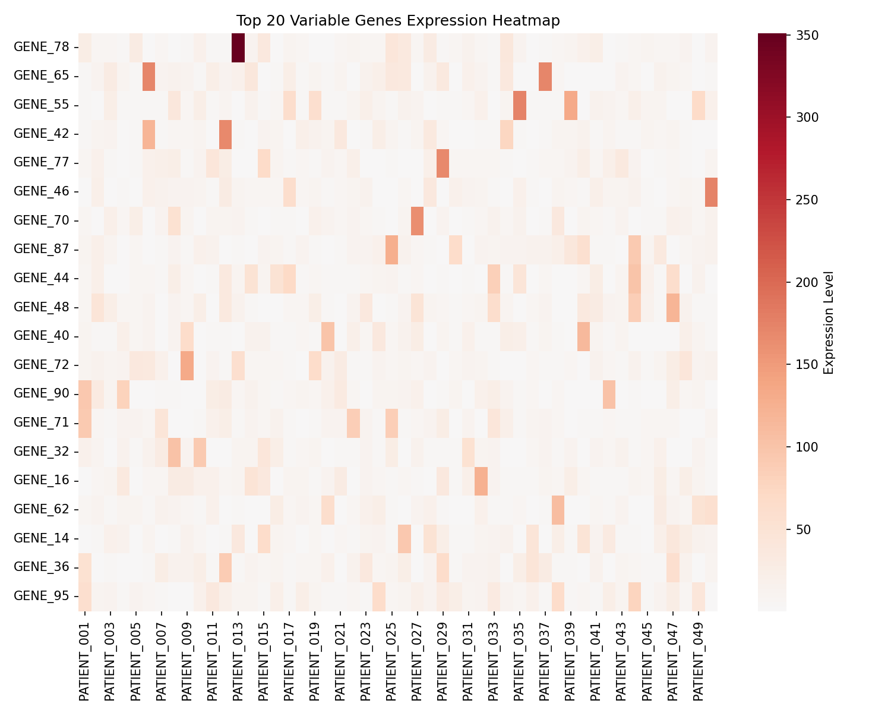
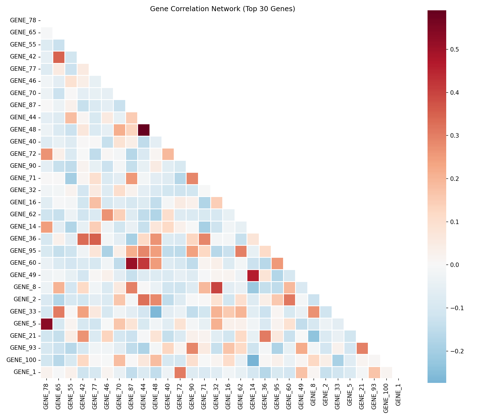
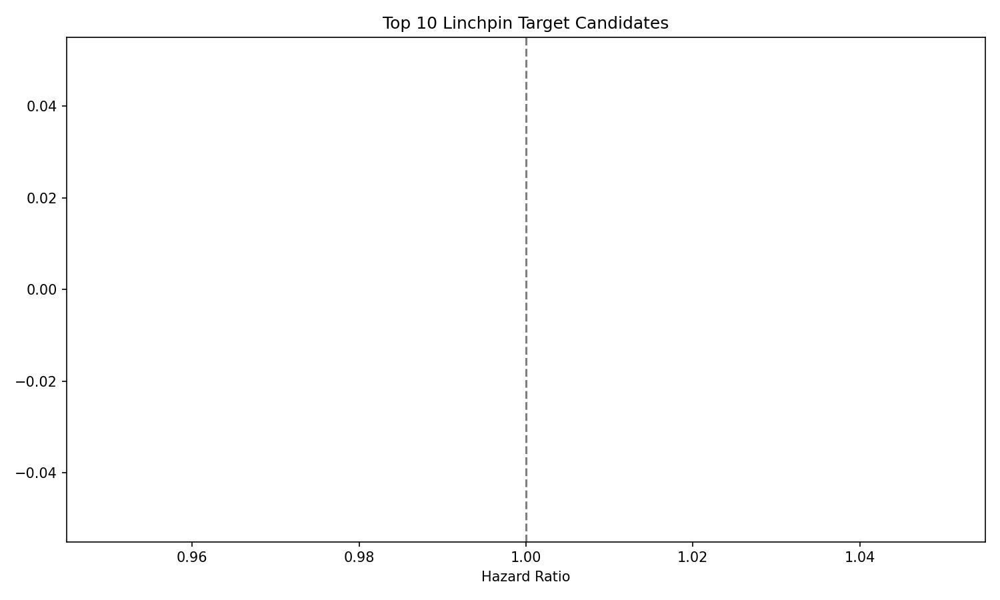
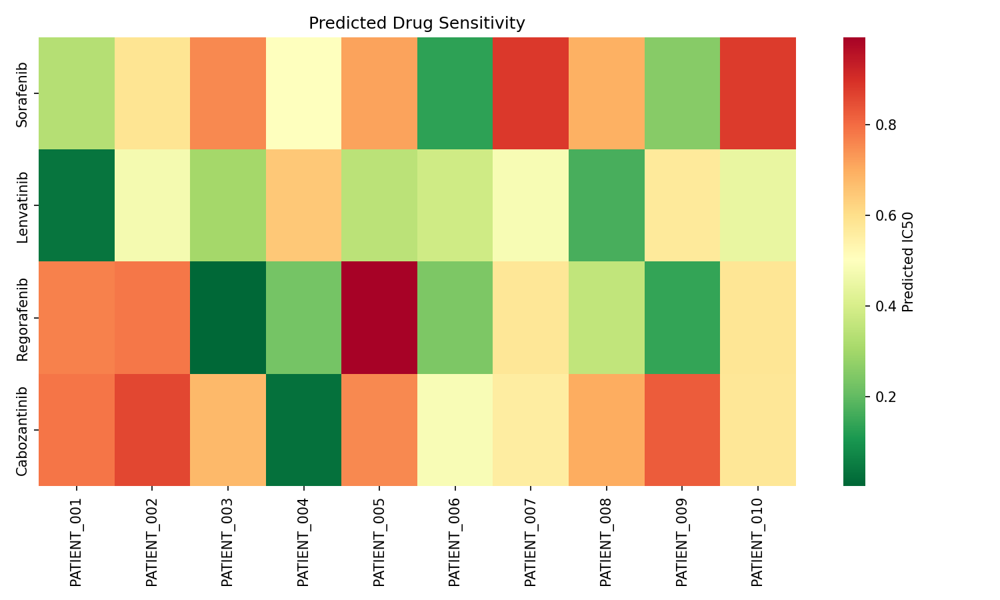

LIHC精准医学分析报告
会话ID: test-complete-workflow
生成时间: 2025-07-25 16:44:08
Stage 1: 多维度生物学分析
生存统计
总患者数: 50
事件数: 25
中位随访时间: 1277 天
Heatmap

Stage 2: 跨维度网络分析
网络统计
节点数: 30
边数: 18
平均相关性: 0.132
Correlation Plot

Stage 3: Linchpin基因识别
Top 5 Linchpin靶点
Target Plot

精准医学分析
Drug Plot
